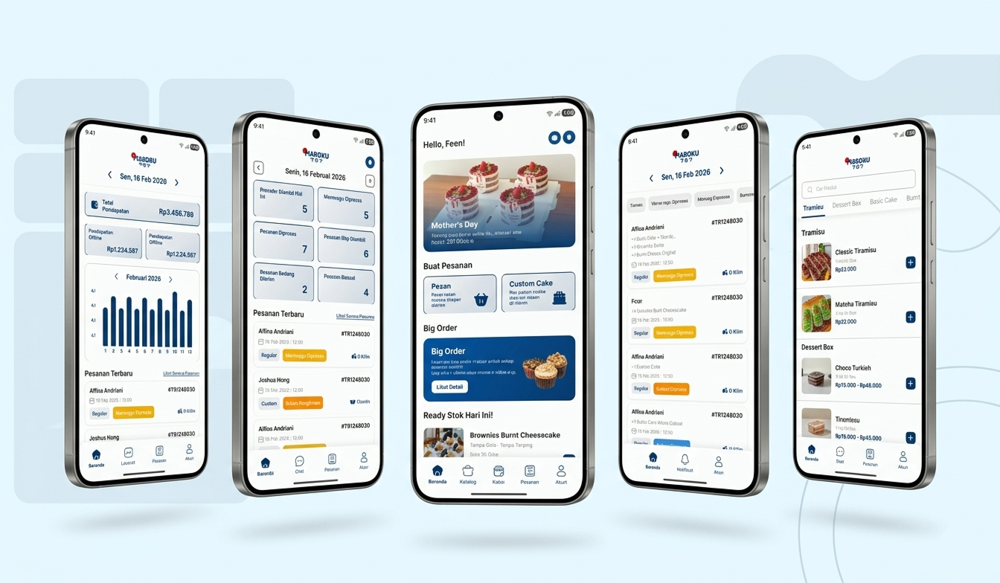

Maroku Mobile App Design
Maroku Cake Shop Mobile App Design is a mobile app design project created to improve Maroku’s cake ordering and customer service experience by translating business needs and user pain points into a more structured digital solution. The project addressed multiple service scenarios, including everyday cake orders, cake decorating class registration, and large event orders, each with different user needs and operational flows. Using a Design Thinking approach, the project involved user research, problem analysis, solution ideation, information architecture, user flow design, wireframing, design system creation, and high-fidelity prototyping. The proposed solution was then evaluated through usability testing, SUS, and QUIS to ensure the experience was intuitive, efficient, and aligned with both user expectations and Maroku’s service operations.